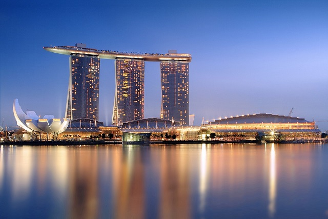

The Pinnacle @ Duxton
Одна из самых необычных смотровых площадок находится на 50-м этаже жилого комплекса Pinnacle@Duxton, расположеном в 2хшагах от чайна -тауна. Все семь башен, расположенные в виде знака вопроса, соединены двумя терассами на 26-м и 50-м этажах. Для посетителей доступна площадка на 50-м этаже. Очень рекомендую к посещению. Чтобы попасть наверх, необходимо приобрести карту за S$5 в автомате на нижнем этаже. Автомат находится в башне 1G, ближайшей к морю. Будьте внимательны, автомат работает только с картами EZ-Link (карта для проезда в общественном транспорте), поэтому такая карта с необходимой суммой уже должна у вас быть. После покупки билетов поднимайтесь на 50-й этаж на лифте и далее, используя билеты, проходите автоматическую дверь. Обратно так же. Для посетителей существует дневная квота в 200 человек. Посмотреть, сколько человек уже посетило смотровую сегодня, можно на официальном сайте. Перед поездкой мы в течение недели проверяли сайт, но ни в один из дней квота не была превышена. Время работы с 9 до 22.

Hong Kong Soya Sauce Chicken Rice & Noodle
Чан Хон Менг держит лавку уличной еды в Сингапуре уже 35 лет. Он вырос в семье малазийских фермеров, бросил школу в пятнадцать и научился готовить, чтобы помогать родителям. Каждое утро перед его палаткой в Китайском квартале выстраивается очередь из желающих попробовать знаменитую лапшу с соевым соусом и курицей.С тех пор как Чан получил мишленовскую звезду, за его китайской лапшой приходится стоять не меньше двух часов. Стоит блюдо пару долларов США — это самая доступная еда из Красного гида Мишлена в Сингапуре. Как добраться: 335 Smith Street, Китайскиий квартал, Сингапур Когда открыто: каждый день, 11:00—20:00

Парк Мерлиона
Парк Мерлиона, раскинувшийся в устье реки Сингапур, — это не просто рядовое место для прогулок и отдыха, благодаря умелому пиару слава о нём разнеслась по всему миру. Сейчас парк можно смело назвать знаковой достопримечательностью Сингапура, мимо которой не проходит ни один турист, а его главным «тотемным животным» стал выдуманный Мерлион. Начиная с 1964 г. изображение мифологического Мерлиона — существа с туловищем рыбы и головой льва, вздымающегося на гребне волны, использовалось в эмблеме Сингапурского совета по туризму, но вскоре оно стало символом и визитной карточкой Сингапура. Торжественная церемония открытия монумента с участием знаменитого премьер-министра Ли Куан Ю состоялась в сентябре 1972 г. Бронзовая мемориальная доска, установленная в ходе празднеств, напоминала, что «Мерлион — это символ приветствия для всех посетителей Сингапура».

Мост Хеликс
Мост Хеликс – это уникальный крытый пешеходный мост в центре Сингапура, соединяющий между собой районы Марина Бэй и Марина Центр. По мнению архитекторов, он является одним из красивейших современных мостов мира. Мост был открыт в 2010 году и в этом же году на фестивале «World Architecture Festival Awards» получил престижную награду «World's Best Transport Building».
Marina Bay Sands
Marina Bay Sands — гостиница и казино на берегу Marina Bay в Центральном регионе Сингапура.Построено корпорацией Ssangyong Engineering & Construction Co. Ltd., заказчик — группа Las Vegas Sands.Комплекс включает три 55-этажные башни высотой 200 метров, на которых расположена большая терраса в виде гондолы в которой находятся бассейн и сад площадью 12,4 тыс. кв. метров. В гостинице есть 2561 гостиничный номер, выставочный центр, музей, два больших театра, семь ресторанов, два ледовых катка. Гостиница была разработана архитектором Моше Сафди, который, по его словам, при постройке вдохновился колодой карт. Дизайн гостиницы одобрен мастерами фэн-шуй. Отель находится в центре города на расстоянии 3 км от делового центра. Занимает 17-ю строчку в списке крупнейших зданий и сооружений мира (по площади помещений).

Fountain of Wealth
Фонтан Богатства находится в центре Сингапура, рядом с торговым центром Suntec City и в нескольких минутах ходьбы от Сингапурского колеса обозрения. В 1998 году он был внесен в книгу рекордов Гиннеса как самый большой фонтан в мире. Фонтан построен по правилам фэн-шуй и каждый его элемент наделен глубоким смыслом. Так, бронзовое кольцо фонтана в соответствии с индуистскими верованиями олицетворяет вселенную, и представляет собой духовное единство, равенство и гармонию всех наций Сингапура. Вся конструкция фонтана в целом символизирует богатство и жизнь. Местные жители верят, что совершив определенный ритуал у фонтана, можно привлечь в свою жизнь богатство и деньги. Фонтан состоит из двух частей — большей и меньшей, находящихся одна в другой, большая часть несколько раз в день выключается. В это время нужно подойти к малой части — маленькому фонтану, опустить правую руку в воду и загадать желание, касающееся денег. Повторяя это желание мысленно и не вынимая руку из воды, нужно обойти фонтан по кругу три раза. Во избежание столпотворения, посетителей к фонтану пускают небольшими группами в следующие периоды: 10:00 — 12:00, 14:00 — 16:00, 18:00 — 19:30.

Haji Lane
Улица подходит для тех кто любит получать от путешествия много ярких фото. здесь домики разукрашены во все цвета радуги и очень пестры!! так же на этой улице есть неплохие ресторанчики и бистро где можно отдохнуть и посмотреть фотографии для любителей шопинга есть магазинчики но по мне сувениры немного дороже чем в других местах!! но все же это место будет очень интересно.

Gardens by the Bay
Gardens by the Bay — это современный футуристично выглядящий парковый комплекс с оранжереями в Марина-Бэй в Сингапуре, открывшийся летом 2012 года и призванный улучшить экологию города. Площадь комплекса — 101 га. Одна оранжерея называется Flower Dome — ее площадь достигает 1,2 га, а внутри поддерживается теплый субтропический климат наподобие средиземноморского. Оранжерея Cloud Forest Dome чуть поменьше (0,8 га), здесь созданы влажные экваториальные условия. Всего в обеих оранжереях произрастает 220 тыс. растений из разных уголков планеты. В Gardens by the Bay для туристов создан специальный комплекс сооружений, состоящий из 18 «деревьев» высотой от 25 до 50 м, самые высокие из которых соединены 128-метровым мостом. Причем 11 из этих деревьев оснащены солнечными батареями, что позволяет комплексу экономить электроэнергию. В январе 2014 года в парке открылась отдельная зона, предназначенная для отдыха с детьми, — Far East Organization Children’s Garden. В новом парке дети могут исследовать окружающий мир, фантазировать и творить в окружении пышной растительности, что, в свою очередь, способствует развитию интереса к природе и окружающей среде. Скульптура «Планета» Новый парк площадью 1 гарасположен между зонами Cloud Forest и Satay by the Bay и предоставляет возможности для отдыха и развлечений всей семьей. Детские аттракционы и программы рассчитаны на две возрастные группы: от 1 до 5 лет и от 6 до 12 лет. Детки могут играть в интерактивные игры, в том числе водные, используя интегрированное оборудование, также предусмотрены образовательные программы. Ключевые темы для развлечений — водные приключения и приключения в лесу. Такие активные и сенсорные игры, по мнению специалистов, способствуют физическому, когнитивному и социально-эмоциональному развитию детей. Игровая зона парка включает подвесной мостик, гамак, качели, перекладину для балансирования, горку с трамплином, оборудование для фигурной стрижки деревьев; водный аттракцион с 17 фигурками рыбок, из которых бьют струи воды и по которым малыши могут карабкаться; систему водных тоннелей и фонтанов, вращающихся на 360 градусов; настоящий тропический лес с четырех- и семиметровыми деревьями и веревочными мостами; тропу приключений со скалой для альпинизма и многое другое. Поскольку парк является частью ботанического сада, он богат экзотическими растениями. На территории садов расположена знаменитая скульптура «Планета» — в виде младенца. Автор — британский художник и скульптор Марк Куинн. Цены и часы работы Gardens by the Bay: Сады на свежем воздухе Круглосуточно, технологический перерыв с 02:00 до 05:00. OCBC SkyWay: Теплицы Ежедневно с 09:00 до 21:00, касса до 20:00. Взрослые — S$28, дети от 3 до 12 лет — S$15. Променад на высоте (OCBC SkyWay): Ежедневно с 09:00 до 21:00, последний запуск в 20:30. Взрослые — S$8, дети от 3 до 12 лет — S$5. «Детский сад»: Выходные и праздники с 09:00 до 21:00, последний запуск в 20:30. Со вторника по пятницу с 10:00 до 19:00, последний запуск в 18:30. Доступ на площадку свободный. Транспорт по территории садов: Шаттлы (Shuttle Service) курсируют между станцией Bayfront и теплицами. Ежедневно с 09:00 до 21:00 (каждый первый понедельник месяца — с 12:30). Интервал — 10 минут. Стоимость — S$3 (неограниченное количество поездок в течение одного дня). Auto Rider: Автобусная экскурсия по садам (Outdoor Garden Audio Tour). С понедельника по пятницу с 09:00 до 17:30 (каждый первый понедельник месяца — с 12:30). Выходные, кануны национальных праздников и праздничные дни с 09:00 до 17:30. Продолжительность экскурсии — 25 минут. Интервал — 15 минут. Взрослый билет — S$8, посетители старше 60 лет — S$5, дети от 3 до 12 лет — S$3.